ST01 学员名册与七个档案页签
已验证展示与切换实际操作：点击一级页签“学员”，选中王小格，逐一进入右侧七个页签。
页面反馈：未过滤时名册显示114名学员；左侧有姓名/手机号搜索、班级和筛选。右侧为信息、课表&任务、学习报告、练习情况、课程反馈、回访记录、考试记录。
边界与未验证：114为当前账号快照；首次进入保留了既有页签状态，不认定默认一定打开某个页签。
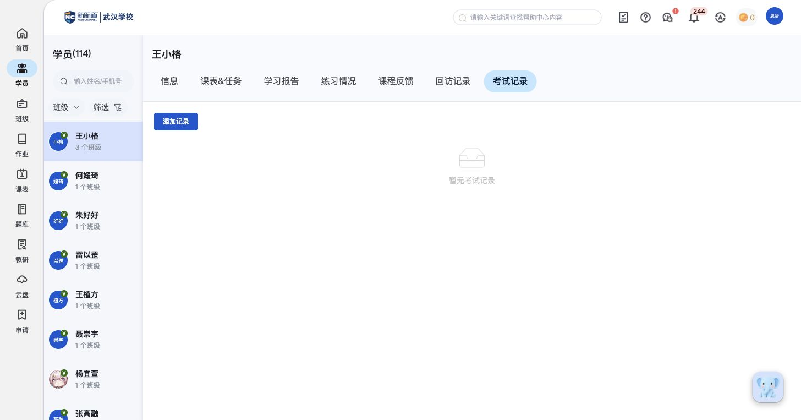
调研报告：学员功能结构与清单。本页保留逐次操作和截图，供追溯具体证据。
2026-10-22 · 逐功能截图版 · 56条功能操作记录 · 88张对应截图
本章只研究教师端“学员”一级页签及其直接下钻。围绕王小格档案逐页操作，按名册与信息、课表&任务、学习报告、练习情况、课程反馈、回访记录、考试记录记录功能。其他一级页签另行调研。
功能结论来自实际点击、输入、切换和结果回读，每条均附对应原始截图。旧帮助文档不作为本章功能证据；界面存在入口、成功执行和受数据限制分别标注。
环境：新航道武汉学校教师端，王思贤账号；2026-10-22。用户确认测试环境无敏感信息，要求截图保留原始学员信息。
本轮经明确授权新增1条回访、1条SAT考试、保存1条AI评语，并生成2份同区间SAT报告（第二份含评语）。未提交新任务、错词训练、课程评分，未发送考前通知、未删除记录。
“已验证”只覆盖每条列出的动作与反馈；菜单、字段、图标可见不等于后续流程完成。AI生成内容单独记录，推断与数字不自动视作可靠事实。
| 模块 | 记录数 | 覆盖范围 |
|---|---|---|
| 名册与信息 | 7 | 名册搜索/状态/班级，基础档案、班级卡片、入学模考空态 |
| 课表&任务 | 7 | 月历、任务表单与日期时间、清单配置、双样式预览、生成图片边界 |
| 学习报告 | 12 | 科目日期、汇总与四页分析、AI评语保存、生成/记录/分享与成品核验 |
| 练习情况·统计 | 13 | 作业列表与筛选、单词书、开放题库、词汇量与AI分析 |
| 练习情况·错题与笔记 | 9 | 错题统计/分类/归因/下钻、答案开关、错词布置配置、笔记空态 |
| 课程反馈 | 2 | 评分汇总与未上课前置限制 |
| 回访记录 | 2 | 新增、保存、列表核验、编辑回读 |
| 考试记录 | 4 | 科目、预设与自定义分项、新增保存、编辑回读 |
实际操作：点击一级页签“学员”，选中王小格，逐一进入右侧七个页签。
页面反馈：未过滤时名册显示114名学员；左侧有姓名/手机号搜索、班级和筛选。右侧为信息、课表&任务、学习报告、练习情况、课程反馈、回访记录、考试记录。
边界与未验证：114为当前账号快照；首次进入保留了既有页签状态，不认定默认一定打开某个页签。

实际操作：依次搜索“王小格”“不存在的调研姓名”“17371065915”。
页面反馈：姓名与手机号均定位到王小格1人；不存在姓名返回0人和“暂无内容”。选中学员后可阅读其档案。
边界与未验证：只核验本次关键词；未验证模糊匹配、拼音、跨校区检索范围。
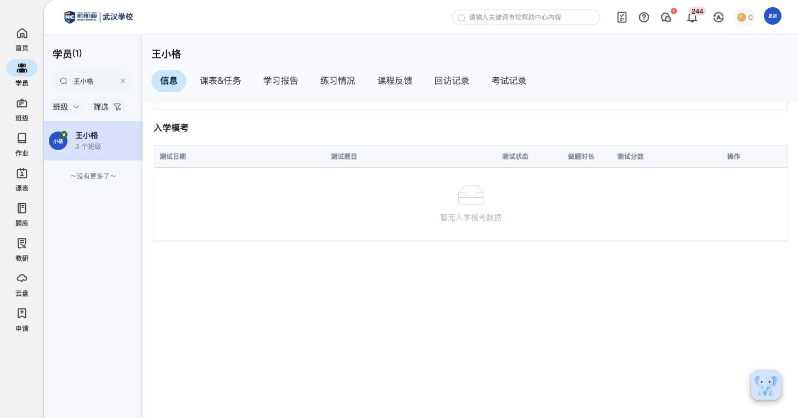
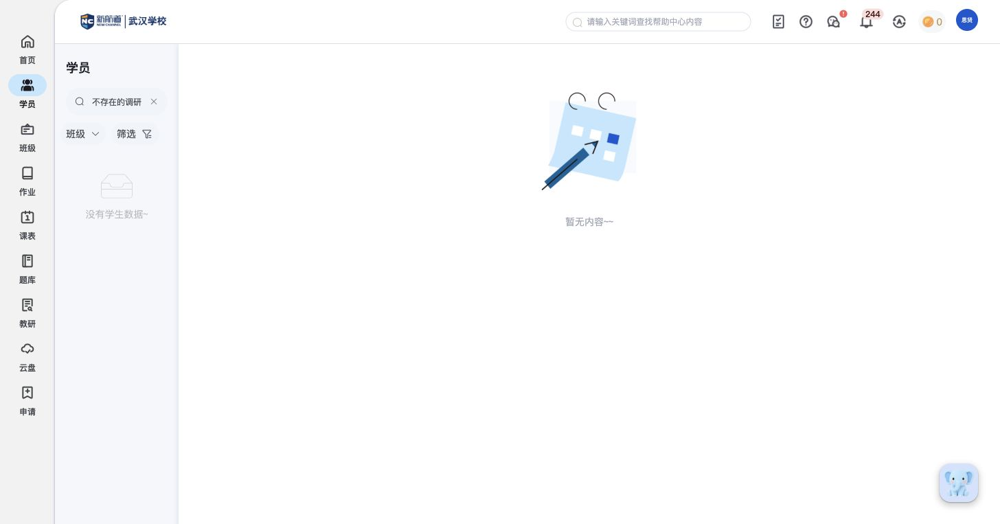
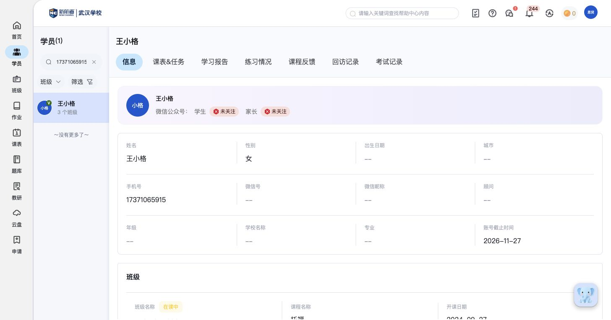
实际操作：点击筛选→展开状态→选择已结课，之后恢复全部。
页面反馈：菜单为全部、在读中、已结课。选已结课时名册为76人，恢复全部后为114人。
边界与未验证：没有逐一核对所有学员的结课状态来源。
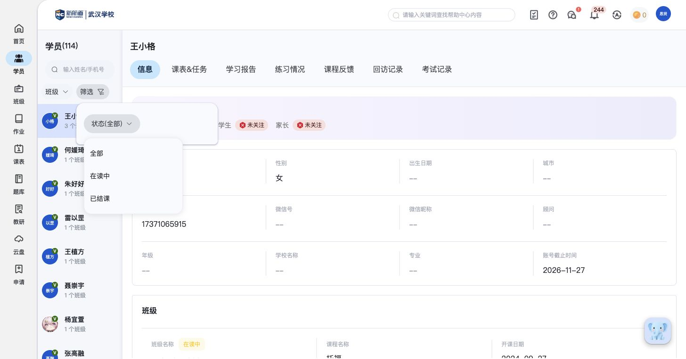
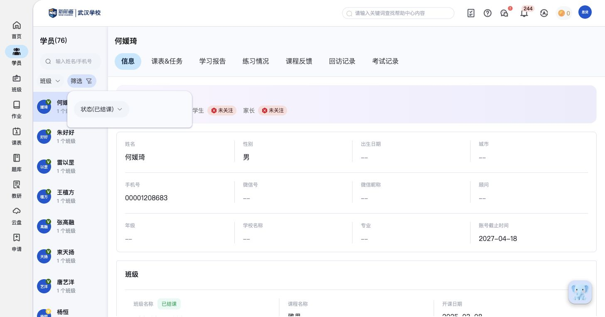
实际操作：打开名册班级选择器→搜索“测试班”→选择测试班002。
页面反馈：选择器可搜索班级；过滤后名册剩王小格1人，卡片标记1个班级。右侧档案仍可展示其3个在读班级，任务月历仍有SAT班事件。
边界与未验证：名册班级过滤不等同于右侧各模块自动限定到同一班级；多班组合未实测。
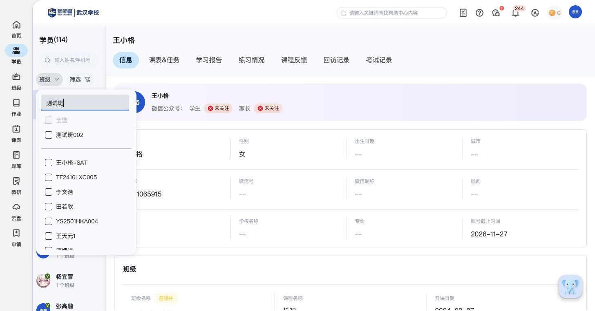


实际操作：进入信息页，阅读上方档案。
页面反馈：显示头像、姓名、学生/家长公众号关注状态；资料字段包含姓名、性别、出生日期、城市、手机号、微信号、微信昵称、顾问、年级、学校名称、专业、账号截止时间。样例中学生与家长均未关注，截止时间2026-11-27。
边界与未验证：本轮查看资料，没有看到或执行资料编辑与公众号绑定流程。
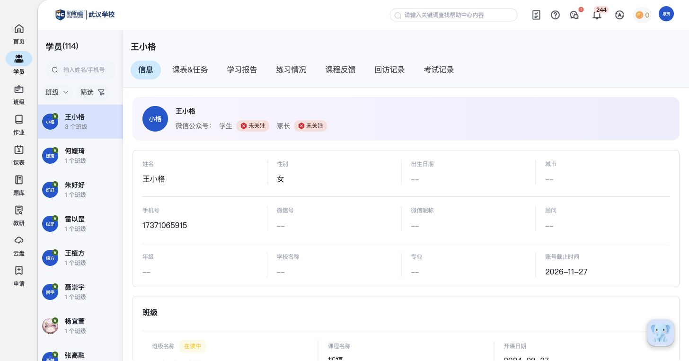
实际操作：信息页向下滚动至班级区域。
页面反馈：3张卡片均标记在读中，显示班级名称、课程名称、开课日期：TF2410LXC005/托福/2024-09-27，测试班002/AP/2025-06-18，王小格-SAT/SAT班/2026-09-23。
边界与未验证：未执行转班、退班、入班操作；不能由卡片展示推定这些管理能力。
实际操作：继续滚动至入学模考。
页面反馈：表头为测试日期、测试题目、测试状态、做题时长、测试分数、操作；样例显示暂无入学模考数据。
边界与未验证：没有可用记录，无法验证具体模考详情和结果流转。
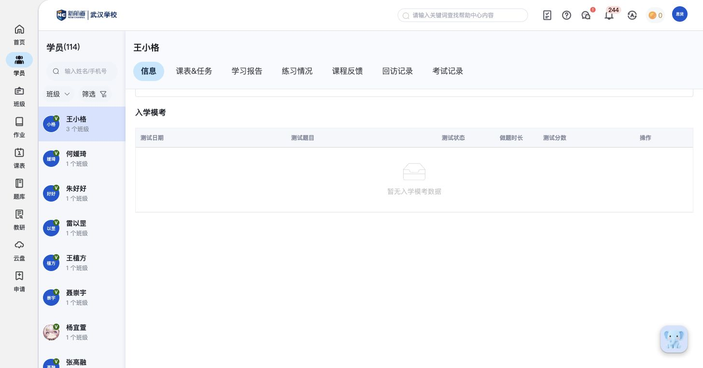
实际操作：进入课表&任务，查看2026年10月月历，再切上个月和本月。
页面反馈：月历按星期排列，提供上个月、本月、下个月；图例区分考试、课程、作业、任务。10月可见字数测试和错词训练，9月可见测试0922、测试0922-1、sat全科测试。另有模块自己的班级选择器。
边界与未验证：已切换9月和10月；未测试每一种事件类型的详情，也未单独应用月历自己的班级筛选。
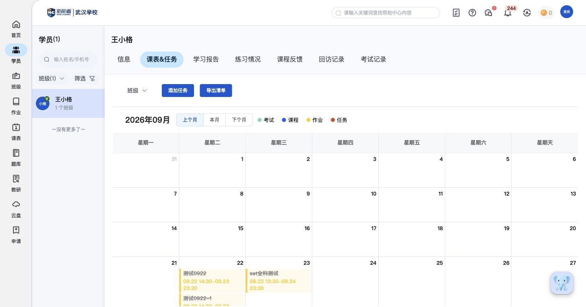
实际操作：点击添加任务→展开班级箭头→查看可选班级。
页面反馈：表单包含班级、任务名称、开始日期/时间、结束日期/时间、提醒日期/时间、取消和确定。班级菜单可选该学员关联的3个班级；初次默认TF2410LXC005，并非左侧名册过滤的测试班002。
边界与未验证：没有保存新任务；提交后的任务展示、提醒送达和修改删除尚未验证。
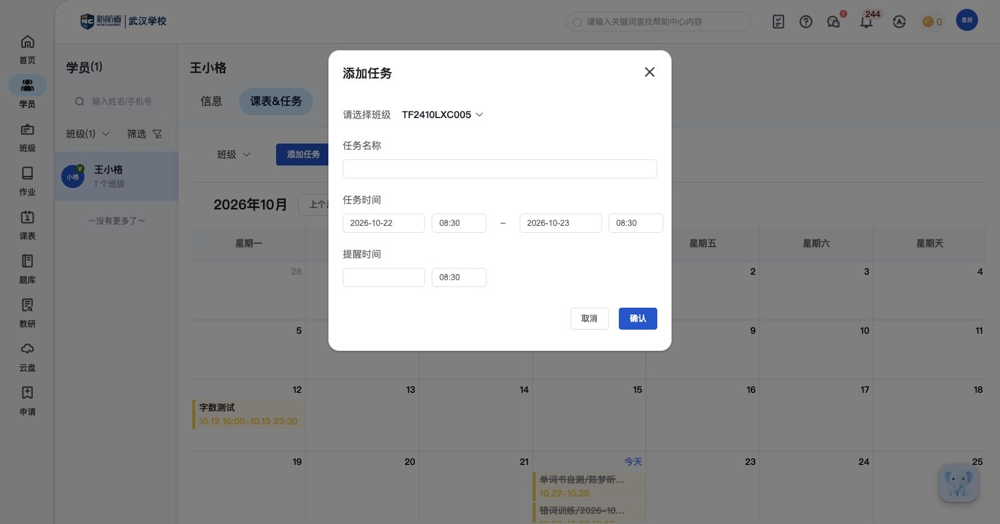
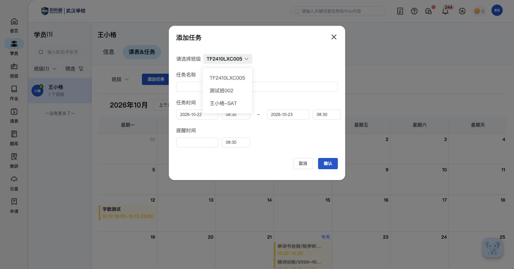
实际操作：在任务表单中用日期面板选10月23日，再用时间菜单选择开始08:30、结束09:00、提醒08:00。
页面反馈：回读显示2026-10-23 08:30至09:00，提醒2026-10-23 08:00。时间菜单以15分钟间隔列出选项。本次最终表单班级为TF2410LXC005，随后取消。
边界与未验证：只验证控件选值，不验证提醒执行或非法时间校验。早先输入日期未生效的草稿不作为成功证据。
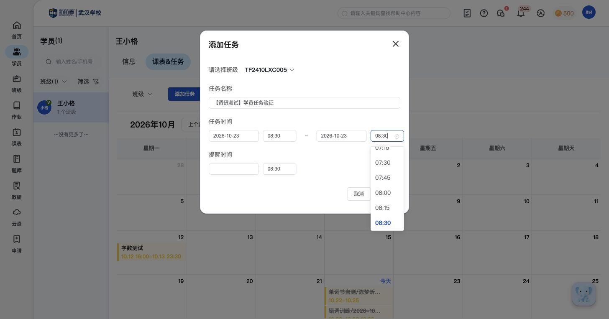
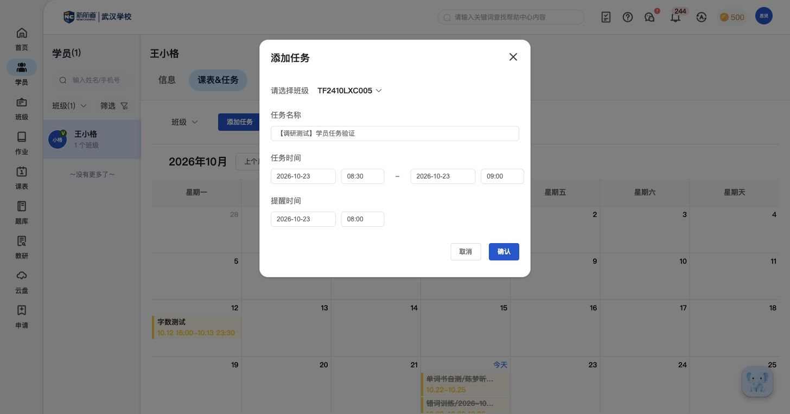
实际操作：点击10月12日至13日附近的日历日期区域。
页面反馈：打开添加任务弹窗，任务名为空，日期预填10月12日至13日。
边界与未验证：点击落在日期区域，没有将该动作描述成作业详情入口；未保存。
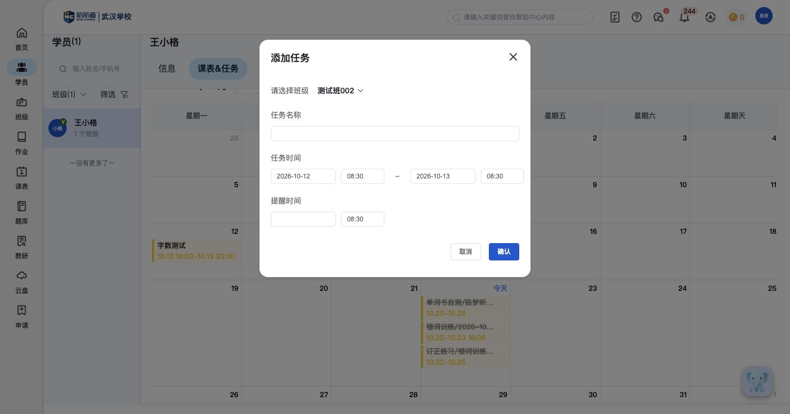
实际操作：点击导出清单，查看王小格任务清单弹窗。
页面反馈：提供起止日期、列表样式/视图样式、考试/课程/作业/任务勾选项、整体点评/评语，以及预览和生成图片。当前10月22日至24日统计为考试0、课程0、作业3、任务0，暂无点评。
边界与未验证：记录当前配置与数量；未逐项验证四类勾选或修改日期后的计算口径。
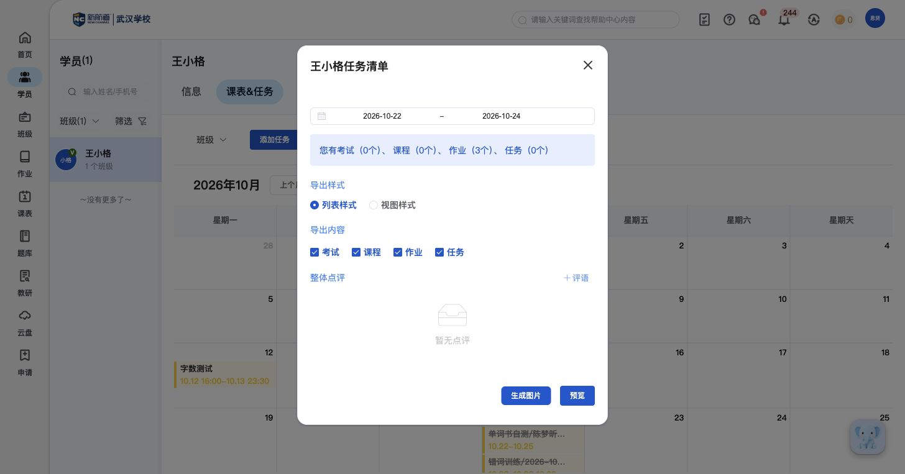
实际操作：分别选择视图样式和列表样式，点击预览。
页面反馈：视图样式生成月历预览；列表样式生成带学校标识、学员、日期和作业条目的纵向清单，样例中展示3条作业及34、80、100等分数。
边界与未验证：视图预览在当前窗口有横向超出；按原画面记录，未将其推定为所有设备的布局问题。
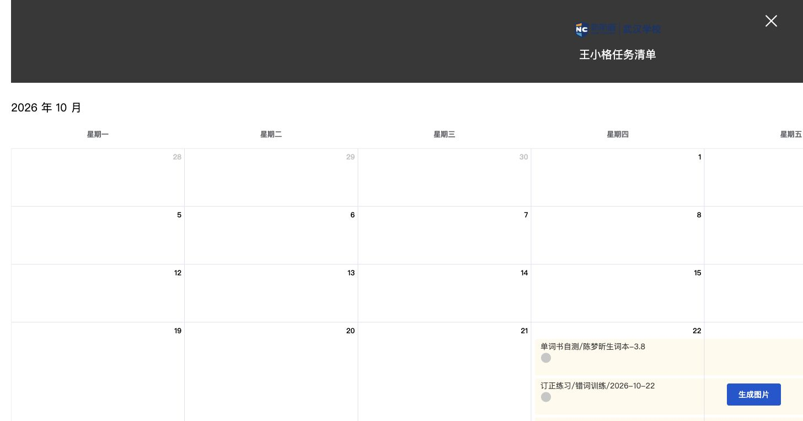

实际操作：在列表样式中点击生成图片。
页面反馈：原页未新增明确成功提示，操作后仍保留任务清单配置。
边界与未验证：本轮没有取得并打开生成文件，用户的“正常行为”未单独确认此项下载；因此不写成图片下载闭环成功。
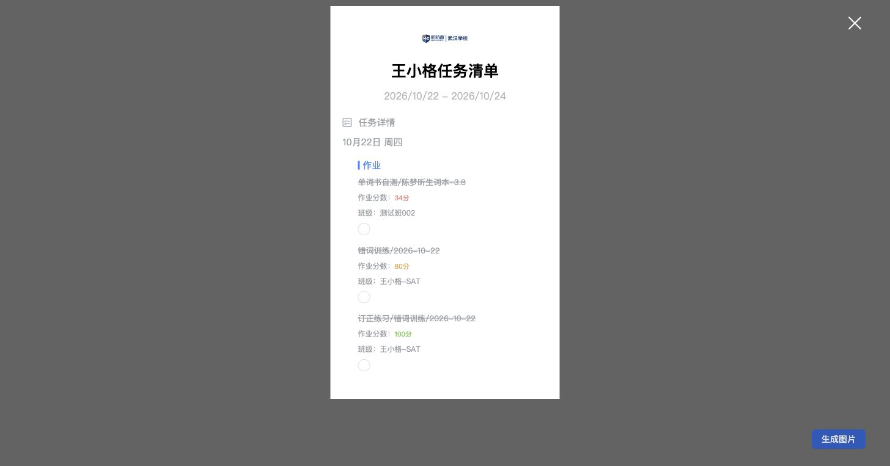
实际操作：进入学习报告→展开科目→选择SAT→设为2026-09-01至10-22。
页面反馈：该学员科目菜单为AP、托福、SAT。切换后展示已上课时/总课时0/0、作业完成率67%、读写(机考)200/800、数学(机考)220/800，知识点暂无数据。
边界与未验证：首次进入保留AP和旧日期区间，不能视作全系统默认值；汇总来源和预测分算法未核验。
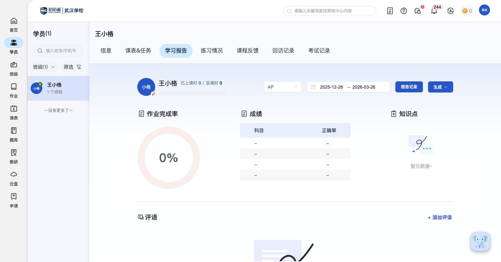
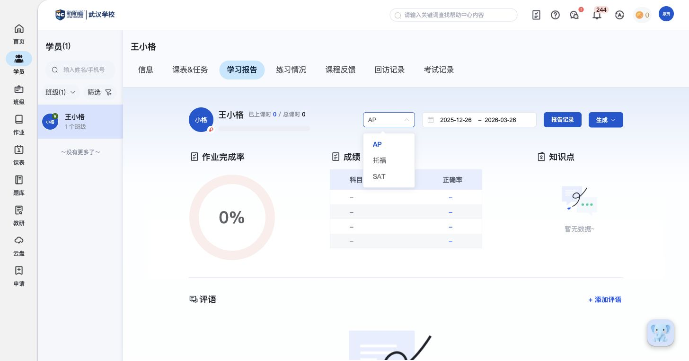
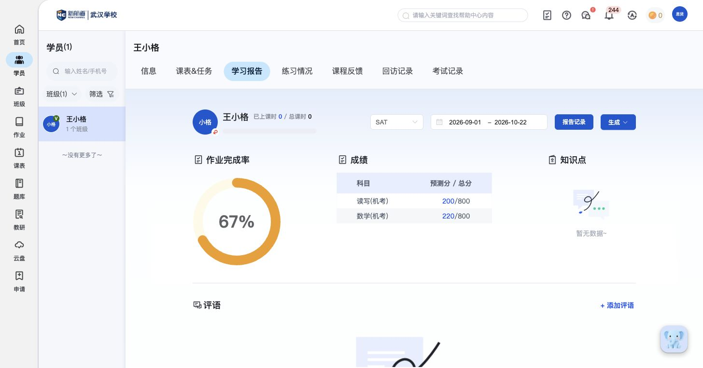
实际操作：在SAT日期范围下滚动到成绩页。
页面反馈：页面有模考成绩走势图、平均分210和分项分200/220；模考记录中sat全科测试总分420，时间2026-10-15 15:10，并有查看详情。
边界与未验证：210是本页面平均分展示，不能替代420的模考总分；未根据帮助文档补计算公式。
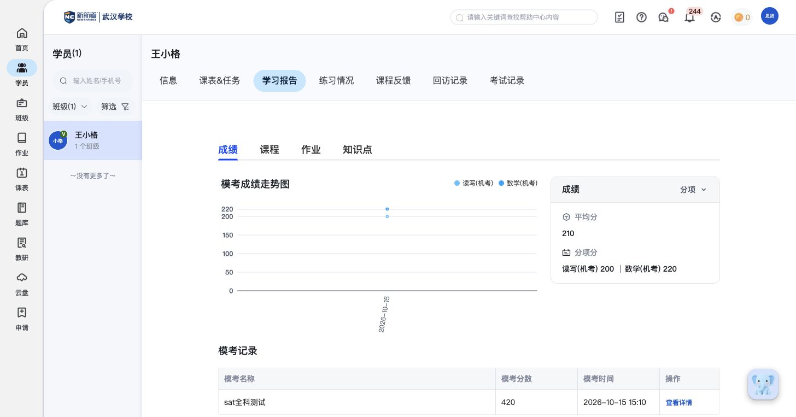
实际操作：点击sat全科测试的查看详情。
页面反馈：打开新标签的SAT结果页，显示420/1600、读写200/800、数学220/800、正确率18%，并提供作业结果、答题解析、答题录屏、巩固训练等入口。
边界与未验证：本阶段核验入口与落点；评分、解析、录屏等完整流程留到相应作业研究，不因入口可见认定已验证。
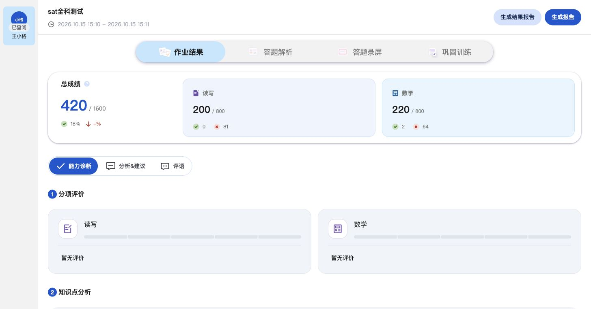
实际操作：切换报告下方课程页签。
页面反馈：显示班级课程数据、分项数据、课堂表现及学习建议。当前班级王小格-SAT课时0/0，SAT/托福/AP等分项为0/0，课堂评分和建议暂无数据。
边界与未验证：页面并未在此样例给出可核验的考勤明细；课程数据和反馈闭环受样本限制。
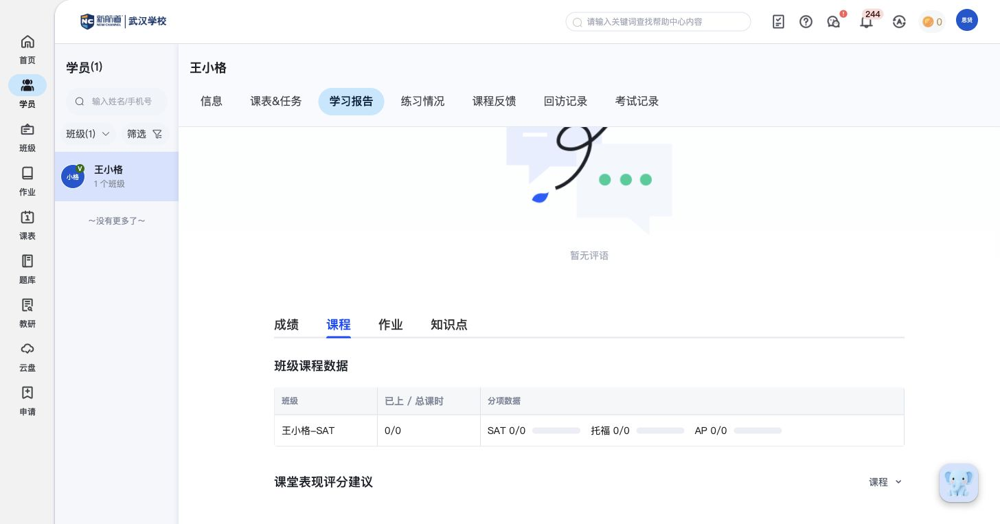
实际操作：切换作业页签。
页面反馈：班级作业分析列出班级、完成数/总数、完成率、正确率、逾期完成数；王小格-SAT为2/3、67%、正确率空、逾期完成数0。单词书分析含单词书、单元数、词数、进度、正确率、错词数，当前为空；另有作业完成率图。
边界与未验证：该日期/科目范围下的2/3不能与练习情况全历史18/71直接比较。没有确认统计来源和去重规则。

实际操作：切换知识点页签，并向下滚动查看全部区域。
页面反馈：可见词汇量测试分析、词汇量走势、知识点分析、知识点练习次数、知识图谱。知识点表列知识点、类型、总次数、正确数、错误数、程度；本次范围均暂无数据。
边界与未验证：没有有数据样例，不能描述图谱节点交互、熟练度算法和趋势规则。
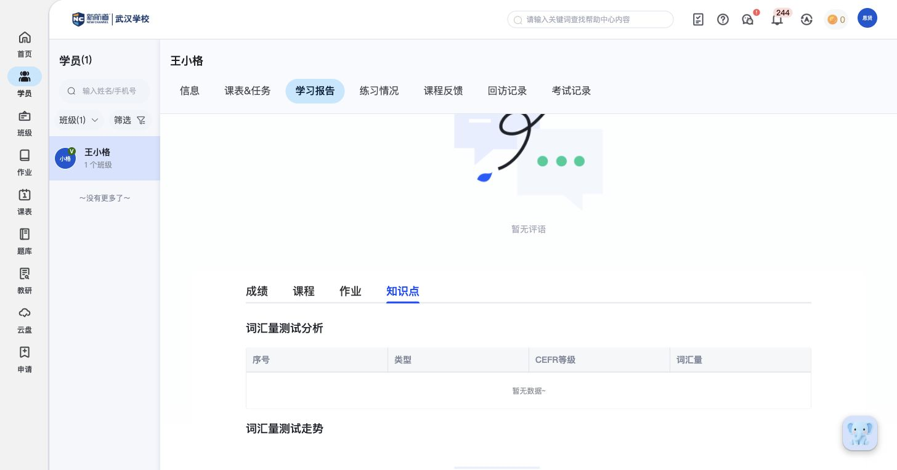
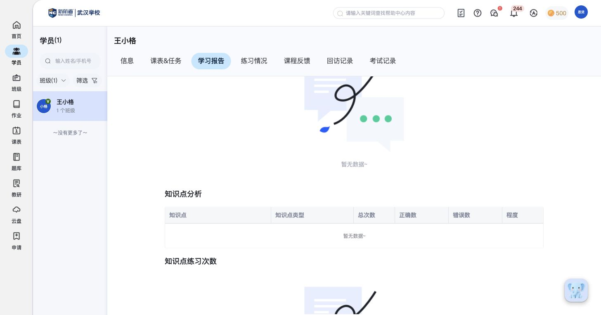
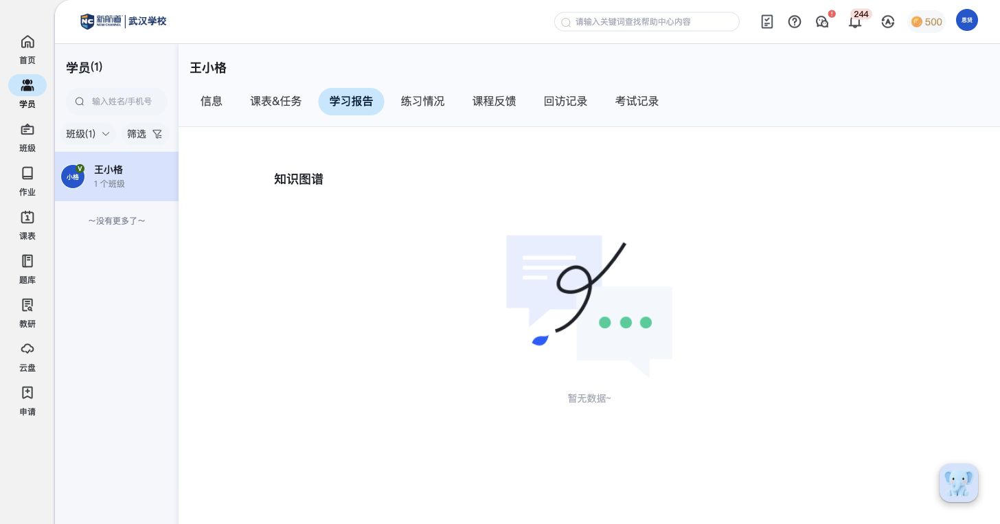
实际操作：点击添加评语→查看编辑器→点击AI一键生成，等待返回。
页面反馈：编辑器有3000字计数；AI返回约879字的总体表现、完成率、作业得分、分项、单词书和综合建议。生成完成时仍在编辑状态。
边界与未验证：AI输出是草稿。它称200/800为12.5%、220/800为13.75%，与直接相除的25%、27.5%不一致；不能把这段话当作正确统计规则或正式教学结论。
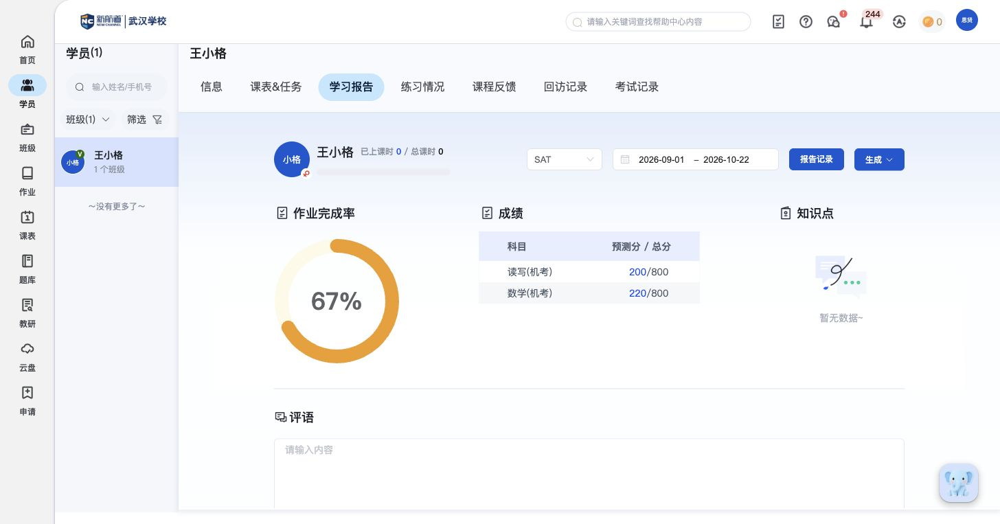
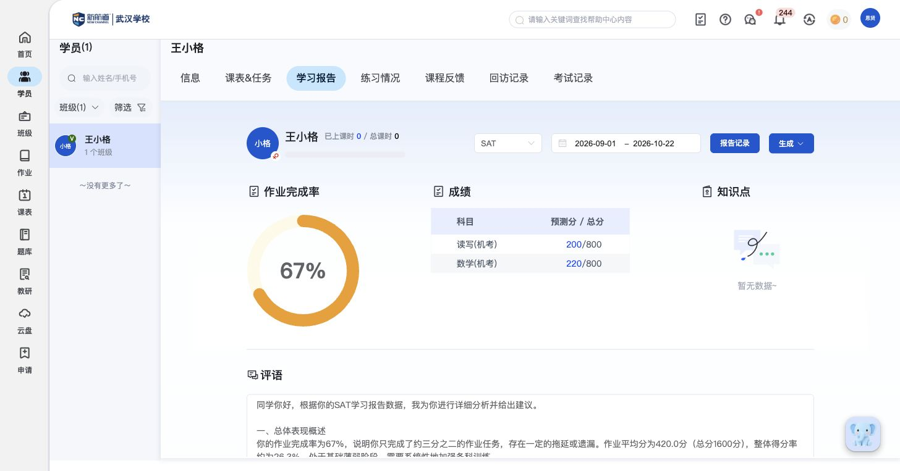
实际操作：获准后滚动到编辑器底部，点击蓝色对勾保存。
页面反馈：编辑器关闭，出现王思贤、王小格-SAT、2026-10-22与完整评语，提供编辑、删除。保存后的评语可进入再次生成的报告。
边界与未验证：仅生成AI文字不等同于保存成功。未测试编辑后再次提交、删除和多老师合并规则。
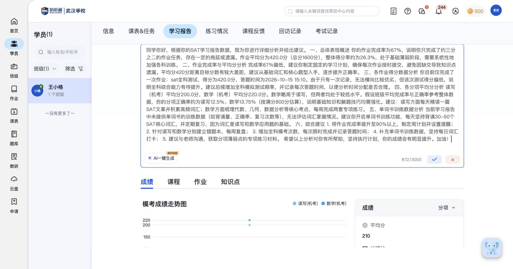
实际操作：生成菜单中选择成绩、课程、作业、知识点并确认生成；评语保存后再次生成同区间报告。
页面反馈：报告记录增加SAT、2026-09-01至10-22的条目。第二份卡片标记“王思贤等1位老师评语”。原来还存在李冰晖生成的雅思报告。
边界与未验证：本次留下2份同区间SAT测试报告：第一份无评语，第二份含已保存评语。未删除任何报告；未核验取消单个模块后的成品。
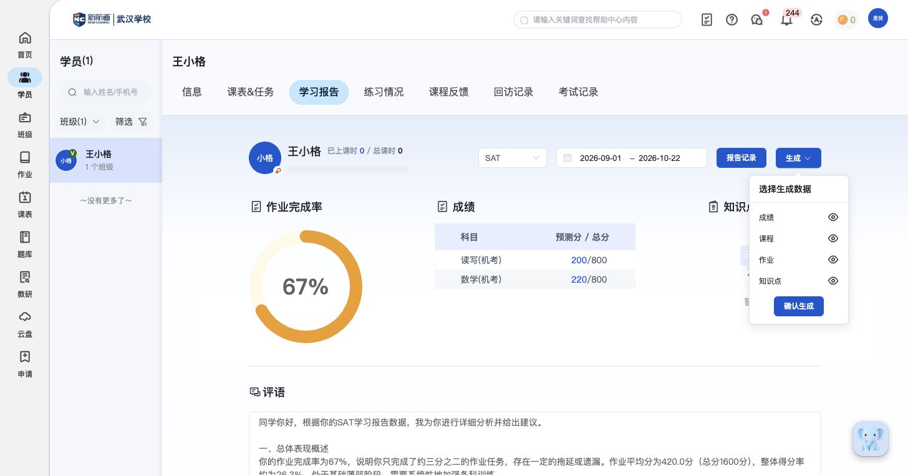
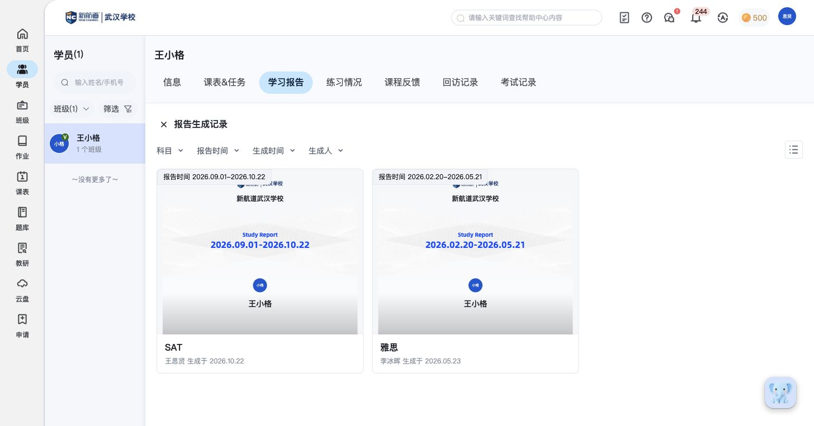
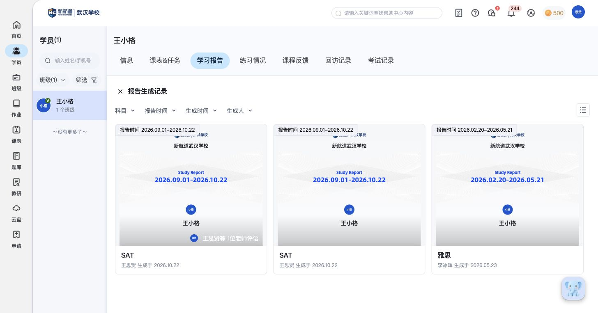
实际操作：点击报告记录，查看顶部筛选与卡片。
页面反馈：有科目、报告时间、生成时间、生成人等条件，卡片显示报告区间、生成者和评语情况，并提供分享入口。
边界与未验证：未用多组条件核对筛选命中结果；无文字布局图标未推定功能。
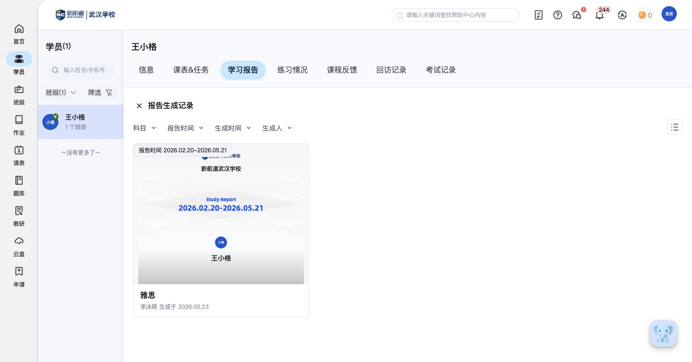
实际操作：点击SAT生成报告的分享。
页面反馈：弹窗提供报告链接、复制链接、二维码、下载二维码。
边界与未验证：没有把链接发给其他人，也未验证复制与二维码下载文件。弹窗科目显示AP，而记录卡和实际报告为SAT，属于本次界面不一致，未推断后台归属错误。
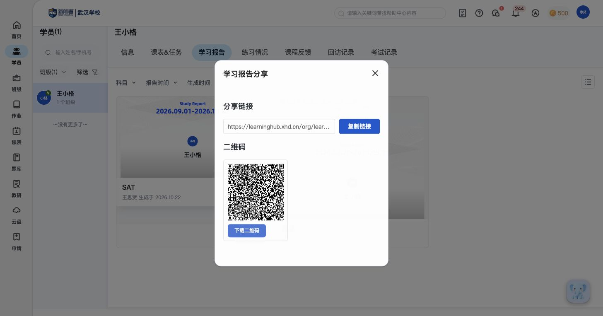
实际操作：打开分享弹窗提供的最终报告链接，检查封面、统计与评语。
页面反馈：新标签展示新航道武汉学校、Study Report、王小格、SAT、王小格-SAT、老师王思贤和2026.09.01–10.22；汇总为67%、200/800、220/800，正文已包含保存后的AI评语，并有成绩/课程/作业/知识点页签。
边界与未验证：已核验最终成品。首份因未保存草稿而无评语，第二份确认包含；报告的统计与AI文字需分别理解。
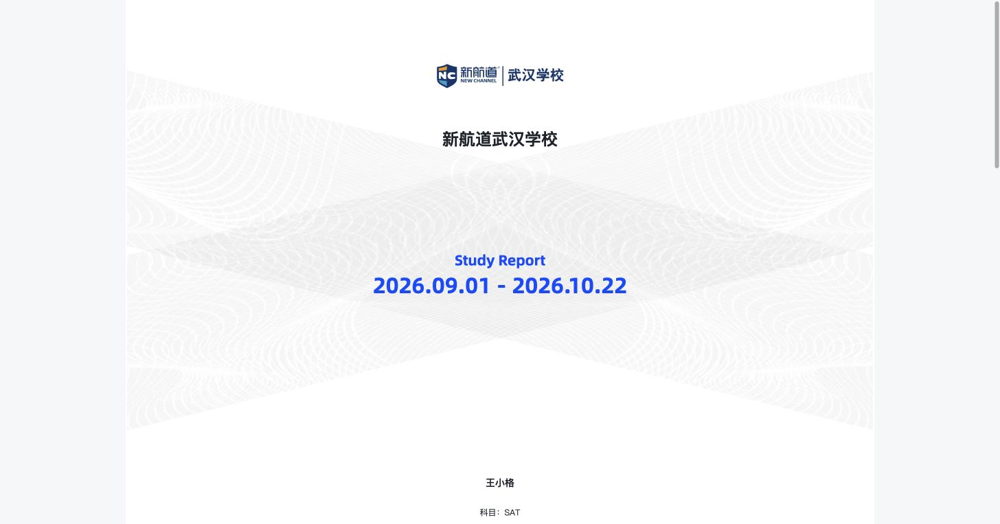

实际操作：进入练习情况→练习统计，逐一点击顶部卡片。
页面反馈：次级页签为练习统计、错题分析、笔记。统计卡片为作业完成情况18/71、自适应统计、单词书进度共学习56词、开放题库、词汇量测试。
边界与未验证：数值是当前账号和样例的快照，不将所有卡片视为同一统计周期。

实际操作：查看作业完成情况列表。
页面反馈：表格为布置日期、作业名称、类型、班级名称、完成日期、布置老师、批改老师、完成状态、分数、操作。提供作业类型、状态、班级、布置老师、批改老师、完成时间、布置时间和作业名搜索，71条、30条/页。
边界与未验证：本轮未逐一应用班级/老师/时间过滤，也未翻页核对第2页；排序图标可见但方向未测。
实际操作：展开作业类型→选择单词作业。
页面反馈：菜单有全部、作业模考、单词作业、打卡作业、视频课件；选择单词作业后列表为11条。
边界与未验证：其他类型仅看到菜单，未逐类验证结果。
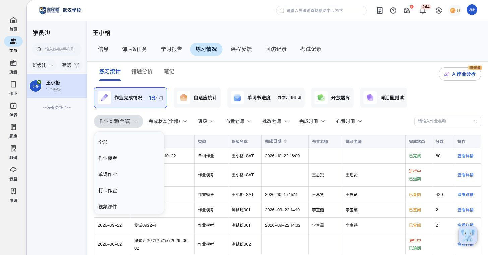
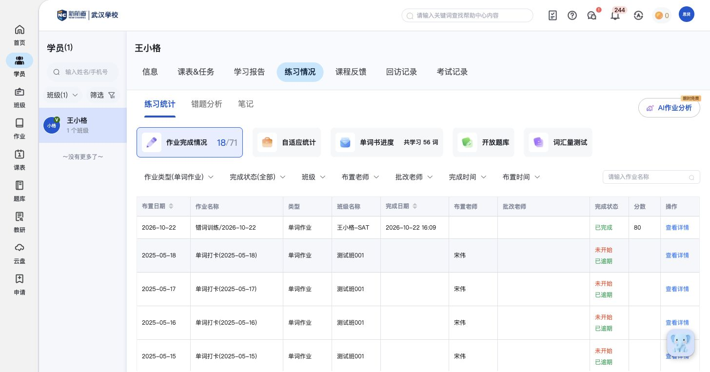
实际操作：展开状态→选已完成→输入错词训练。
页面反馈：状态菜单有全部、已完成、未开始、进行中、已批改、已查阅、已逾期。单词作业+已完成+错词训练组合下剩1条，分数80。
边界与未验证：没有逐项验证所有状态；状态与逾期标签是否可同时出现以原列表为准，不推断互斥规则。
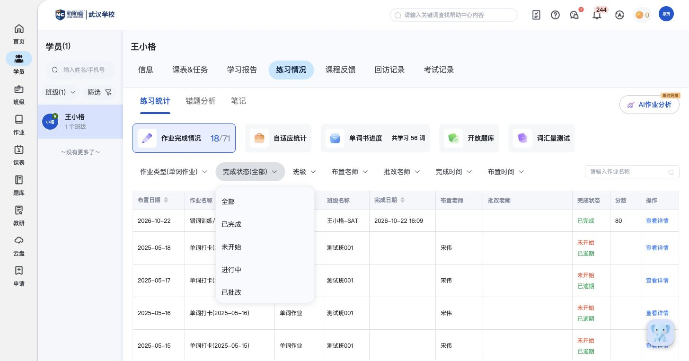
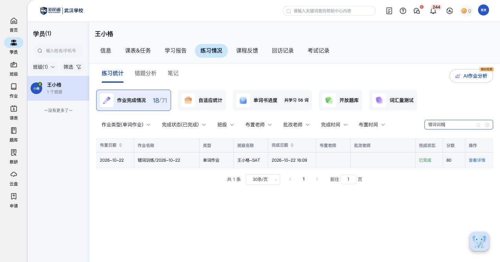
实际操作：点击组合结果的查看详情。
页面反馈：新标签为基础练习，80/100，10词、8对、2错、0未答、正确率80%，可见词条、音标及作业结果/答题解析/答题录屏/巩固训练入口。
边界与未验证：只核验此次结果落点；未逐项播放发音、查看录屏或实际下发布置。
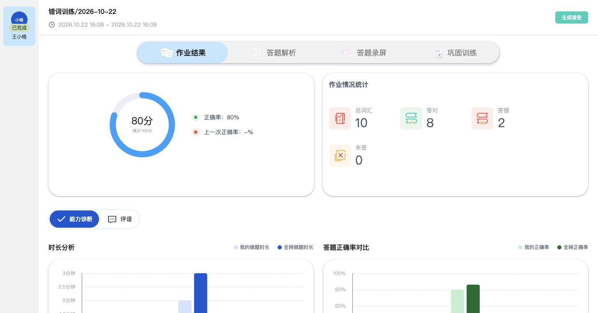
实际操作：点击自适应统计卡片。
页面反馈：当前科目托福，展示单词、阅读、听力、口语、写作等维度的0%和暂无数据，科目选择入口可见。
边界与未验证：未切其他科目取得样本，不能确认自适应能力算法。
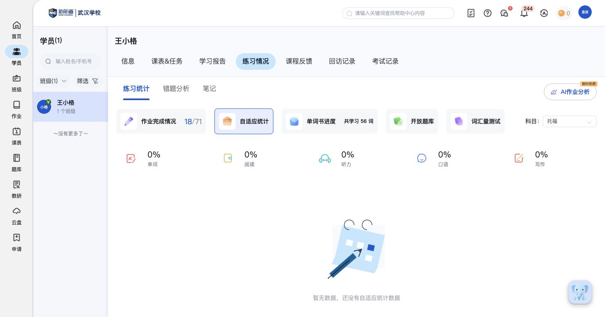
实际操作：点击单词书进度。
页面反馈：2条陈梦昕生词本记录显示托福、布置人李宝燕、布置时间、4单元222词；第一条进度1/4(25%)、正确率34%，第二条0/4、0%。
边界与未验证：顶部共学习56词和书详情已学44词属于不同展示字段，未核验差异口径，不强行套公式。
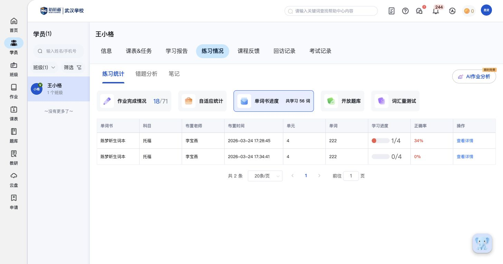
实际操作：打开第一条单词书详情并查看各单元与词卡。
页面反馈：总计222词、已学44、错词29；单元分别显示已完成、未学习、未解锁和各自词数/正确率。右侧词卡包含英美音标/发音入口、双语释义、例句、错词标记。
边界与未验证：只核验展示，不把未解锁状态扩写成已验证的解锁条件；发音播放未单独测试。
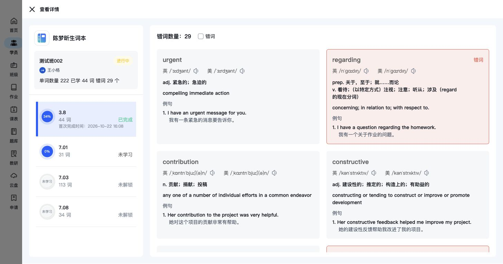
实际操作：在单词书详情勾选错词。
页面反馈：右侧词卡按错词过滤，保留错词标记。
边界与未验证：未核对每一个词和汇总计数的对应关系。
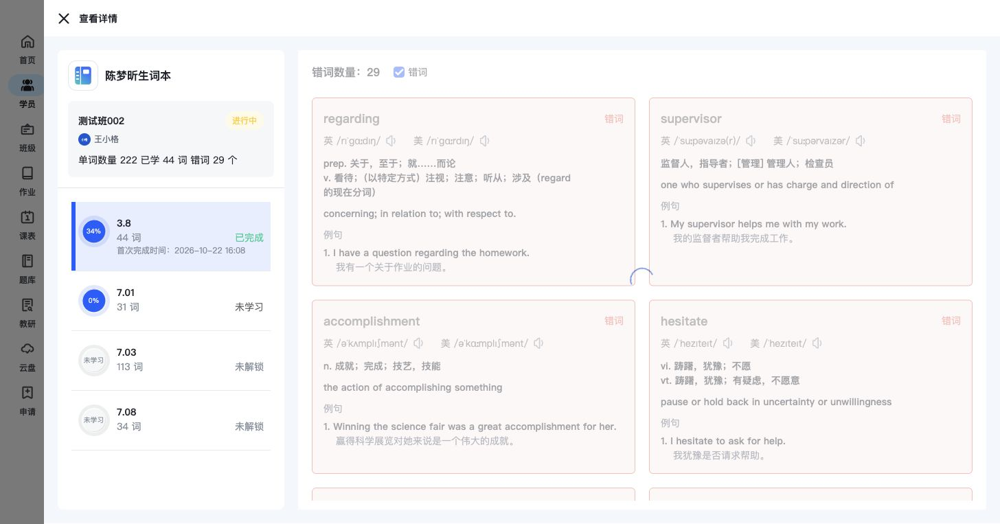
实际操作：点击开放题库。
页面反馈：66条、20条/页；字段为题目名称、科目、开始时间、提交时间、状态、正确率、分数、批改老师、模式、操作。样例有雅思练习和进行中、模考模式等。
边界与未验证：本卡片的具体记录详情及翻页未继续执行，不能因开始过练习认定已提交完成。
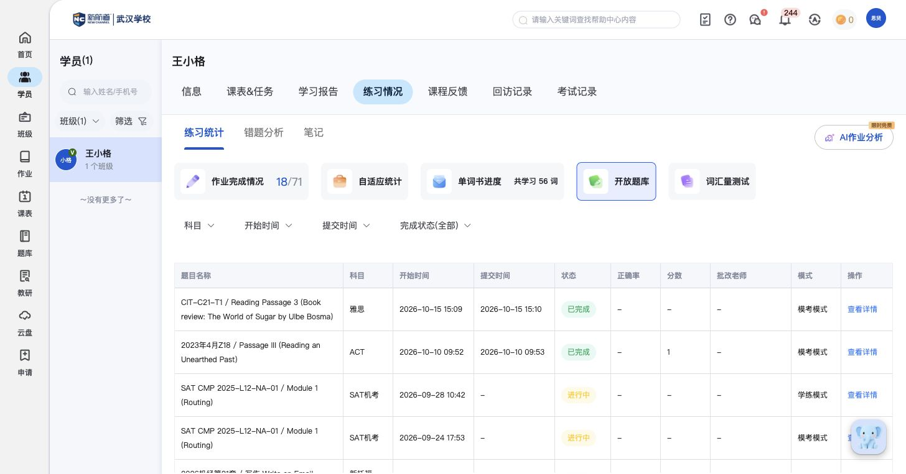
实际操作：点击词汇量测试。
页面反馈：样例有2026-04-18测试，时长3分钟；阅读B1/4074，听力A1/<1000，并有查看。
边界与未验证：只记录页面量表展示，未研究词汇量估计算法。
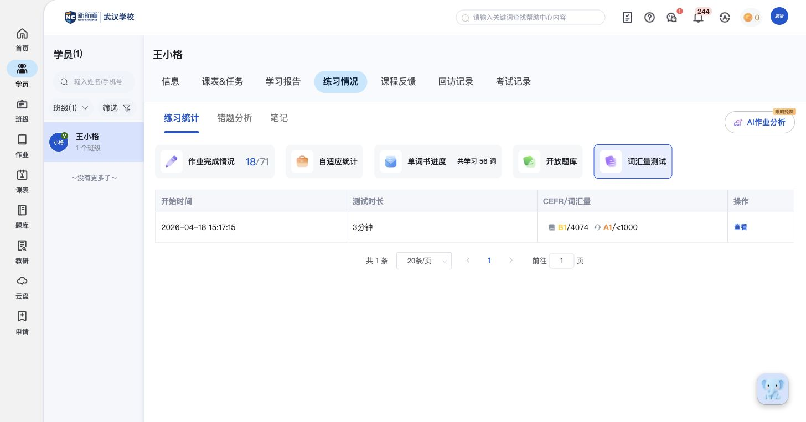
实际操作：点击词汇量测试查看。
页面反馈：新标签显示阅读B1/4074、听力A1/<1000，以及能力说明和CEFR与主流考试的换算对照表。
边界与未验证：对照表仅作为该产品展示内容，未做外部量表权威性校验或将其当作实考成绩。

实际操作：点击AI作业分析，保留浮层等待，返回后滚动阅读。
页面反馈：生成中显示AI分析中；完成后按钮变为重新分析，浮层包含AI数据分析、刚刚更新、洞察与建议，以及洞察/分析/建议。内容汇总71份作业、单词书、真题、开放题库和词汇量，并生成分阶段训练建议。
边界与未验证：内容是AI答复，未逐项核验其数字、日期和因果。对“逃避心理”“动力不足”等推断不作为学员事实；未执行其建议，也未再次点击重新分析。
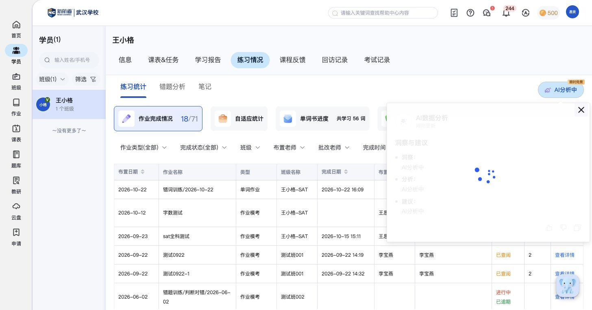

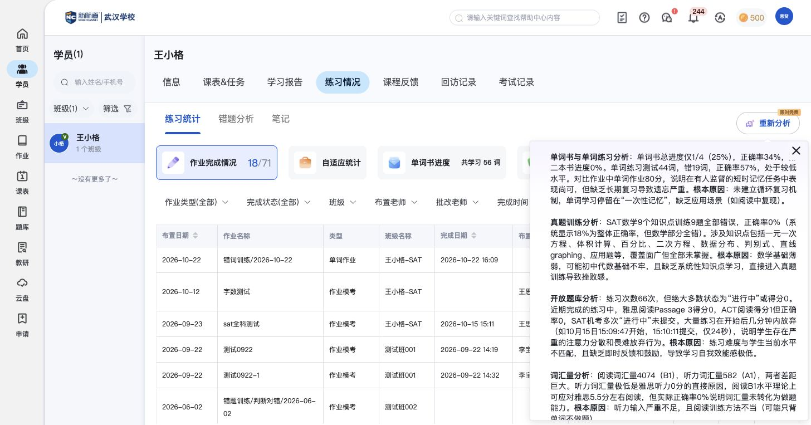
实际操作：点击错题分析，依次进入学科、机构、能力、错词。
页面反馈：学科模式可选雅思和分项；当前本周修复0、总修复1、修复率3.13%。下方有错误归因分布与知识点修复建议。
边界与未验证：分布和修复率是界面结果，未核验算法与跨周期口径。

实际操作：查看左侧知识点分类，再切到已修复。
页面反馈：分类含阅读24题与听力8题及判断、图表、匹配、填空等下级。待修复31题；已修复1题。表格列题目内容、分项、知识点、错误次数、错误归因、最近答错日期及收藏入口。
边界与未验证：当前教师端收藏控件呈禁用，未执行收藏；没有实测完成修复后状态如何迁移。
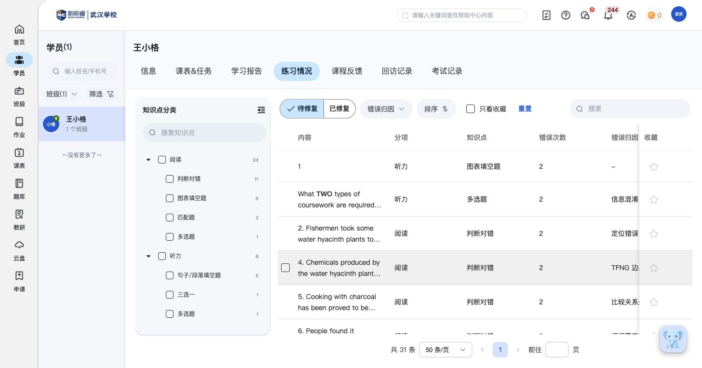
实际操作：打开错误归因→选定位错误→打开排序选项，之后重置。
页面反馈：归因菜单提供关键词和复选项，包含定位错误、TFNG边界混淆、证据覆盖不足、信息混淆等；定位错误过滤后为6条。排序提供错题次数、最新答错日期，另有只看收藏和搜索入口。
边界与未验证：未核验排序方向、只看收藏结果或题目关键词检索，不把可见控件当成全部已跑通。
实际操作：点击题干，检查新开的浏览器标签。
页面反馈：打开错题详情：展示CIT-C5-T1 Section3/Q22、正确率44%、选项及分布、学生答案和正确答案、知识点、题目解析，以及音频/名师讲解/笔记列表/布置入口。
边界与未验证：原页面不变是因为开了新标签，不能认定题干无效。当前只核验内容和入口，未播放音频、修改知识点或布置训练。
实际操作：在错题详情关闭显示答案。
页面反馈：开关从开启变为关闭，选项区的正确答案标示随之隐藏。
边界与未验证：只验证此次显示状态；未验证跨页面记忆、学生端权限和解析区联动规则。
实际操作：分别点击机构和能力，等待页面切换完成。
页面反馈：机构模式选中且科目为雅思时暂无数据；能力模式也暂无数据。
边界与未验证：没有有数据样例，未按帮助文档补充分类层级和处理流程；早先未切换成功的中间截图不作证据。
实际操作：切换错词模式，查看列表与顶部工具。
页面反馈：当前29个错词；有待修复/已修复、排序、只看收藏、重置、搜索、导出和布置。卡片显示英美音标、释义例句、错误次数与日期；收藏为禁用状态。
边界与未验证：导出仅看到入口，未点击取得文件；不宣称已验证下载、收藏或修复提交。
实际操作：点击布置→展开练习单词数量和范围。
页面反馈：开始练习弹层包含数量、布置单词范围、班级和确定。数量提供10至100、每次增10；范围为按错误次数或随机。本次选过10词但未提交。
边界与未验证：没有选择班级并下发布置，没有新增训练作业；分配后的通知、学生执行和修复效果未验证。

实际操作：进入笔记→打开类型与状态菜单。
页面反馈：当前0条；可搜索笔记内容、选文字笔记/材料笔记、选全部/重点笔记、日期和重置。表格含笔记内容、重点笔记、来源名称、作业名称、类型、添加时间，并有批量操作区域。
边界与未验证：没有笔记样例，未进行批量修改；未见并执行新增笔记流程，不根据空表推测创建方式。
实际操作：进入课程反馈。
页面反馈：班级选择当前TF2410LXC005；显示课堂评分、添加评分意见和学习建议，界面说明多位老师评分取平均值；当前建议为空。
边界与未验证：平均值是页面说明，未用多位老师数据验证；未逐班取得课程样本。
实际操作：点击添加评分意见。
页面反馈：出现“该学生还未上课，暂无可反馈课程”。询问用户后，用户确认当前没有其他可用样例。
边界与未验证：本轮无法进入可反馈课程、填写评分并提交。评分项、课程选择及保存后的展示均未宣称已验证。
实际操作：进入回访记录→点击添加。
页面反馈：初始为空；表格列回访时间、回访人、角色、内容、图片、操作。表单包含回访时间、内容、下次回访时间、取消、确认。
边界与未验证：列表虽有图片列，当前表单未见并实测上传控件，不能据列名宣称支持上传。
实际操作：获准后确认10月22日测试回访，不设置下次回访；保存后打开编辑，再取消。
页面反馈：列表新增王思贤/老师/2026-10-22，内容为“【调研测试】用于验证学员回访记录的保存和列表展示，无需处理。”，图片--。编辑表单回读日期、内容与空的下次回访时间，列表有编辑/删除。
边界与未验证：仅新增1条获准测试记录，保留在环境；回读后取消，未再次改写、删除或验证下次回访提醒。

实际操作：进入考试记录→添加记录。
页面反馈：初始无考试记录；表单有科目、名称、时间、总分、考前一天通知、地点、各项成绩、添加分项、上传凭证/附件，以及取消和确认。科目、名称、时间有必填标记。
边界与未验证：未触发所有必填/数值边界校验，未上传附件或发送考前通知。
实际操作：展开科目菜单→选择SAT。
页面反馈：菜单提供托福、雅思、SAT、小托福、ACT、PTE、AP、A-Level、GRE、GMAT、KET/PET/FCE、IB、DET/DSE等多类考试。SAT表单预设阅读、语法、数学、写作，与模考机考结果页的分项名称不同。
边界与未验证：只实填SAT；不将菜单中每一科目的表单与分制认定为已测试。
实际操作：点击添加分项→填“调研自定义分项”、分数1→确认，再随考试记录保存。
页面反馈：小弹窗提供分项名称和分数；确认后出现在各项成绩区域，保存后的考试列表和编辑表单均保留该项1。
边界与未验证：没有验证重复分项、删除分项、分数校验或总分自动计算，420为手工输入。

实际操作：获准后保存SAT“【调研测试】考试记录验证”：2026-10-22、总分420、地点测试地点、自定义分项1，不勾选考前通知；再打开编辑核对并取消。
页面反馈：SAT区域列表新增测试考试，显示总分420和自定义分项1，提供编辑/删除。编辑回读确认地点测试地点、通知未勾选和各分项。
边界与未验证：仅新增1条获准测试考试，保留在环境。地点通过编辑回读验证，列表本身没有地点列；未删除、上传附件、验证提醒送达或成绩同步到其他模块。
| 项目 | 本轮边界 |
|---|---|
| 课程反馈 | 用户确认当前无可用上课样例：停在“暂无可反馈课程”，不能验证评分表单与提交。 |
| 任务与错词布置 | 配置已操作、未提交；没有新增任务或训练，提醒、学生接收和完成流转尚未验证。 |
| 导出文件 | 任务清单生成图片已点击但未取得文件；错词导出仅看到入口。没有把文件生成写成已验证成功。 |
| 空数据 | 入学模考、自适应统计、机构/能力错题、笔记和本次范围的知识点分析缺样例；仅记录真实空态。 |
| 直接下钻 | 已打开SAT模考、单词练习、错题和词汇量结果页。本章记录落点；作业批改、录屏、音频播放等深层流程未全面实测。 |
| 界面与AI待核 | 分享弹窗显示AP而实际报告为SAT；AI评语有分项百分比不一致；AI作业分析包含未经证实的动机与心理推断。均保留原画面，不用猜测修补。 |
王小格：1条2026-10-22回访；1条“【调研测试】考试记录验证”（SAT，总分420，地点测试地点，自定义分项1，通知未勾选）；1条王思贤AI评语；2份2026-09-01至10-22的SAT学习报告。第一份不含评语，第二份含评语。全部保留；未执行删除。
功能条目与截图为本章整理后的结论。原始操作索引包含加载中或未命中的中间状态，不能脱离后续核验单独作为功能结论。S14日期草稿、S47原页未变化、S50未切换成功、S58提示消失等中间态已由后续证据替代。
原始操作索引 · 最终报告全文页面记录 · 最终报告整页截图
错题题干实际打开新标签，已用S70/71核验。任务日期最终以S87/88回读为准；机构模式以S80为准；课程反馈提示以S84为准。每条功能记录均引用对应截图。